완벽보다 완성이 더 중요하다 2016.04, 2017.01-04 | PROJECT ANNE 패션에 관심이 많은 20~30개 진취적인 여성을 타겟으로 하는 사지않고 즐겁게 쓰는 패션 스트리밍 서비스 : 프로젝트 앤한정된 리소스 안에서 최선의 결과를 뽑아내기 위해 노력했던 과제였습니다.
 눈에 보이지 않는 가치를 가시화하고 디자인으로 제안하기 2016.01-12 | EVASION 천편일률적인 패키지 여행에서 벗어나 나만의 특별한 테마가 있는 새로운 여행의 패러다임을 제시하는 프라이빗 트래블 클럽 : 에바종컨탠츠와 브랜드에 대한 고민부터 디자인 작업까지 연결되는 경험을 할 수 있었던 프로젝트였다.